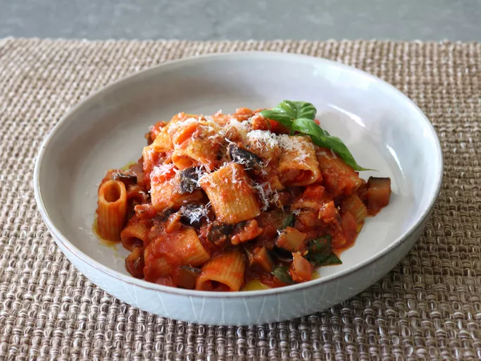

Pasta Alla Caponata
Prep Time: 20 mins
Cook Time: 30 mins
Servings: 4
Description
Chef John's pasta alla caponata turns a famously delicious Sicilian vegetable relish, caponata, into a fabulously delicious pasta sauce. With eggplant, capers, and pine nuts in a rich tomato sauce, this pasta dish is incredible. If you have leftovers—and you probably won't—it makes a great cold summer pasta salad, too, with just an added splash of olive oil.
Ingredient
- 2 (12 ounce) eggplants
- 1 tablespoon kosher salt
- 8 ounces mezze rigatoni, or other dry short pasta
- 1/4 cup extra-virgin olive oil
- 2 cloves garlic, peeled, lightly crushed
- 1/2 yellow onion, diced
- 1 large red bell pepper, diced
- 1 rib celery, diced
- 1 teaspoon salt, plus more to taste
- 2 tablespoons pine nuts
- 1 pinch red pepper flakes, or more to taste
- 1 tablespoon capers
- 1 tablespoon white sugar
- 2 tablespoons red wine vinegar
- 2 cups crushed tomatoes
- 8 basil leaves, torn
- 1/2 cup grated pecorino cheese
Instructions
- Step 1: Peel off half the eggplant skin in strips using a peeler, and cut eggplant into 1/2-inch cubes. Add eggplant cubes to a large bowl and sprinkle over 1 tablespoon kosher salt; toss thoroughly. Let sit for 20 minutes on the counter, tossing occasionally. Transfer into a strainer, rinse lightly with cold water, and drain very well.
- Step 2: Meanwhile, bring a large pot of salted water to a boil over high heat. Cook rigatoni in the boiling water, stirring occasionally until tender yet firm to the bite, about 12 minutes.
- Step 3: Add oil to a skillet and place over medium heat. Add garlic cloves; when they start to sizzle, swirl the oil for about 30 seconds. Remove garlic and set aside.
- Step 4: Turn the heat to high, and add eggplant to the skillet. Cook, stirring, until eggplant loses its firmness and just starts to become tender, about 6 minutes. Turn off the heat. Set a strainer over a bowl; transfer eggplant into the strainer. Pour any olive oil that drains into the bowl back into the skillet, and place skillet back over medium-high heat.
- Step 5: Add onions, celery, and peppers to the skillet, and cook and stir for a few minutes until onions are translucent, and vegetables begin to soften. Add pinenuts, red pepper flakes, capers, and reserved garlic cloves, and cook and stir for 1 minute more.
- Step 6: Stir in sugar and vinegar; cook, stirring for another minute. Add eggplant back into the skillet; cook and stir until eggplant is almost tender, 2 to 3 minutes. Add crushed tomatoes and a small splash of water, and cook, stirring for about 3 minutes. Reduce heat to low.
- Step 7: Transfer cooked pasta with a strainer into the finished sauce. Add a ladle or 2 of pasta water as needed to thin the sauce. Turn off the heat, and stir in torn basil leaves. Grate a small amount of pecorino on top to serve.